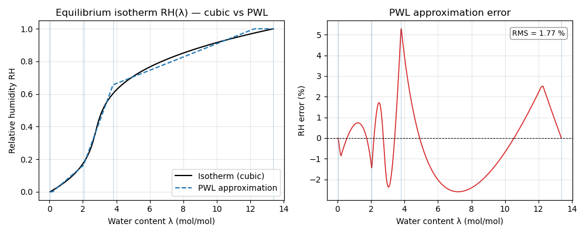
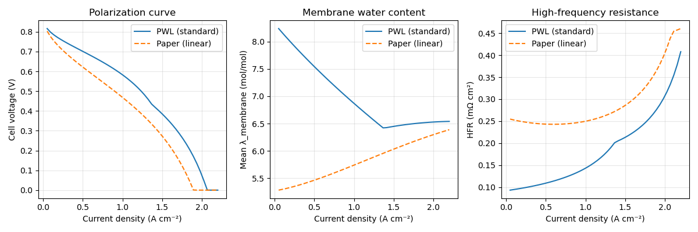
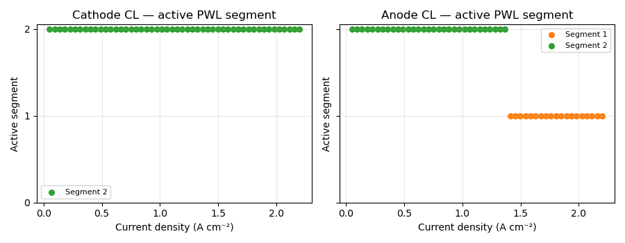

Note
Go to the end to download the full example code.
Piecewise-linear membrane water balance#
marapendi provides two membrane water-balance models:
MembraneWaterBalanceModelPiecewise— the standard model. Boundary conditions are derived from a piecewise-linear regression of the equilibrium isotherm RH(λ), fit byfit_rh_piecewise_linear()at construction time.MembraneWaterBalanceModel— the paper model (Affonso Nobrega et al. 2026). Uses the first-order linear expansion of the isotherm dλ/dRH ≈ const.
This example plots the isotherm fit quality, compares polarization curves from both models, and shows how the active PWL segment varies with current density.
Isotherm fit#
The PFSAIonomer fits a 3-segment piecewise-linear approximation of
RH(λ) at __post_init__ time. The fit is cached so it runs at most
once per unique (polynomial, n_segments, temperature) combination.
import numpy as np
import matplotlib.pyplot as plt
import marapendi as mrpd
from marapendi.water_balance.water_balance import WaterBalanceModel
from marapendi.water_balance.membrane import MembraneWaterBalanceModel
from marapendi.water_balance.membrane_pwl import MembraneWaterBalanceModelPiecewise
from marapendi.cell.explicit_steady_state import ExplicitSteadyStateModel
ionomer = mrpd.PFSAIonomer(equivalent_weight=1100, dry_density=1980)
T_ref = ionomer.pwl_temperature
rh_ref = np.linspace(0.0, 1.0, 400)
lmbd = ionomer.vapor_equilibrium_water_content(rh_ref, T_ref)
rh_pwl = ionomer.linear_rh_from_water_content(lmbd)
fig, axes = plt.subplots(1, 2, figsize=(10, 4))
ax = axes[0]
ax.plot(lmbd, rh_ref, "k-", lw=1.5, label="Isotherm (cubic)")
ax.plot(lmbd, rh_pwl, "C0--", lw=1.5, label="PWL approximation")
for lb in ionomer.lmbd_pwl_breaks:
ax.axvline(lb, color="C0", lw=0.6, ls=":")
ax.set_xlabel("Water content λ (mol/mol)")
ax.set_ylabel("Relative humidity RH")
ax.set_title("Equilibrium isotherm RH(λ) — cubic vs PWL")
ax.legend()
ax.grid(True, alpha=0.3)
ax = axes[1]
err_pct = (rh_pwl - rh_ref) * 100
ax.plot(lmbd, err_pct, "C3-", lw=1.2)
ax.axhline(0, color="k", lw=0.7, ls="--")
for lb in ionomer.lmbd_pwl_breaks:
ax.axvline(lb, color="C0", lw=0.6, ls=":")
ax.set_xlabel("Water content λ (mol/mol)")
ax.set_ylabel("RH error (%)")
ax.set_title("PWL approximation error")
rms = float(np.sqrt(np.mean(err_pct**2)))
ax.text(0.97, 0.95, f"RMS = {rms:.2f} %", transform=ax.transAxes,
ha="right", va="top", fontsize=9,
bbox=dict(boxstyle="round,pad=0.3", fc="white", ec="gray", alpha=0.8))
ax.grid(True, alpha=0.3)
fig.tight_layout()

Cell assembly and dual-model solve#
liq = mrpd.DarcyTransportModel(J_function_exponent=2)
def _make_cell():
return mrpd.FuelCell(
area=25e-4, electrical_resistance=30e-7,
ca=mrpd.FuelCellSide(
cl=mrpd.PtCCatalystLayer(
ecsa=70e3, platinum_loading=0.4e-2, ionomer=ionomer,
reaction=mrpd.ElectrochemicalReaction(
reference_exchange_current_density=2.5e-4,
reaction_order=0.54, activation_energy=67e6,
reference_activity=1e5, reference_temperature=353.15,
number_of_electrons=2, charge_transfer_coeff=0.5,
),
thickness=10e-6, thermal_conductivity=0.22,
pore_diameter=40e-9, absolute_permeability=1e-13, contact_angle=97.,
two_phase_transport_model=liq,
),
gdl=mrpd.GasDiffusionLayer(
thickness=200e-6, porosity=0.6, contact_angle=120.,
effective_gas_diffusion_ratio=0.3, absolute_permeability=1e-12,
thermal_conductivity=0.5, two_phase_transport_model=liq,
),
ch=mrpd.FlowChannel(
width=1e-3, height=1e-3, length=0.1, n_parallel=20, reactant="o2"
),
has_mpl=False, thermal_contact_resistance=4e-4,
),
an=mrpd.FuelCellSide(
cl=mrpd.PtCCatalystLayer(thickness=5e-6, two_phase_transport_model=liq),
gdl=mrpd.GasDiffusionLayer(
thickness=200e-6, effective_gas_diffusion_ratio=0.3,
thermal_conductivity=0.5, two_phase_transport_model=liq,
),
ch=mrpd.FlowChannel(
width=1e-3, height=1e-3, length=0.1, n_parallel=20, reactant="h2"
),
has_mpl=False, thermal_contact_resistance=4e-4,
),
membrane=mrpd.PFSA(ionomer=ionomer, dry_thickness=25e-6),
)
i_arr = np.linspace(500, 22000, 50)
T = 353.15
cond = mrpd.CellConditions(
current_density=i_arr, cell_temperature=T,
ca=mrpd.SideConditions(
inlet_temperature=T, outlet_pressure=1.5e5,
dry_o2_mole_fraction=0.21, inlet_relative_humidity=0.5, stoichiometry=2.0,
),
an=mrpd.SideConditions(
inlet_temperature=T, outlet_pressure=1.5e5,
dry_h2_mole_fraction=1.0, inlet_relative_humidity=0.5, stoichiometry=1.5,
),
)
pwl_model = ExplicitSteadyStateModel(
water_balance_model=WaterBalanceModel(
membrane_water_balance_model=MembraneWaterBalanceModelPiecewise()
)
)
paper_model = ExplicitSteadyStateModel(
water_balance_model=WaterBalanceModel(
membrane_water_balance_model=MembraneWaterBalanceModel()
)
)
cell_pwl = _make_cell()
cell_paper = _make_cell()
st_pwl = pwl_model.solve(cell_pwl, cond, pwl_model.set_initial_conditions(cell_pwl, cond))
st_paper = paper_model.solve(cell_paper, cond, paper_model.set_initial_conditions(cell_paper, cond))
hfr_pwl = pwl_model.voltage_model.high_frequency_resistance(cell_pwl, st_pwl)
hfr_paper = paper_model.voltage_model.high_frequency_resistance(cell_paper, st_paper)
i_cm2 = i_arr * 1e-4
Model comparison#
fig, axes = plt.subplots(1, 3, figsize=(12, 4))
axes[0].plot(i_cm2, st_pwl.cell_voltage, "C0-", label="PWL (standard)")
axes[0].plot(i_cm2, st_paper.cell_voltage, "C1--", label="Paper (linear)")
axes[0].set_xlabel("Current density (A cm⁻²)")
axes[0].set_ylabel("Cell voltage (V)")
axes[0].set_title("Polarization curve")
axes[0].legend()
axes[0].grid(True, alpha=0.3)
axes[1].plot(i_cm2, st_pwl.membrane.water_content, "C0-", label="PWL (standard)")
axes[1].plot(i_cm2, st_paper.membrane.water_content, "C1--", label="Paper (linear)")
axes[1].set_xlabel("Current density (A cm⁻²)")
axes[1].set_ylabel("Mean λ_membrane (mol/mol)")
axes[1].set_title("Membrane water content")
axes[1].legend()
axes[1].grid(True, alpha=0.3)
axes[2].plot(i_cm2, hfr_pwl * 1e4, "C0-", label="PWL (standard)")
axes[2].plot(i_cm2, hfr_paper * 1e4, "C1--", label="Paper (linear)")
axes[2].set_xlabel("Current density (A cm⁻²)")
axes[2].set_ylabel("HFR (mΩ cm²)")
axes[2].set_title("High-frequency resistance")
axes[2].legend()
axes[2].grid(True, alpha=0.3)
fig.tight_layout()

Active PWL segment index#
The piecewise solver selects the segment whose linear approximation is valid at the converged water content. Observing segment transitions reveals where the membrane hydration crosses an isotherm breakpoint.
n_seg = len(cell_pwl.membrane.ionomer.pwl_slopes)
seg_ca = np.asarray(st_pwl.ca.pwl_interval, dtype=int)
seg_an = np.asarray(st_pwl.an.pwl_interval, dtype=int)
fig, axes = plt.subplots(1, 2, figsize=(9, 3.5), sharey=True)
for ax, seg, side in zip(axes, [seg_ca, seg_an], ["Cathode", "Anode"]):
for k in range(n_seg):
mask = seg == k
if mask.any():
ax.scatter(i_cm2[mask], np.full(mask.sum(), k),
color=f"C{k}", s=30, label=f"Segment {k}")
ax.set_xlabel("Current density (A cm⁻²)")
ax.set_ylabel("Active segment")
ax.set_title(f"{side} CL — active PWL segment")
ax.set_yticks(range(n_seg))
ax.legend(fontsize=8)
ax.grid(True, alpha=0.3)
fig.tight_layout()

Total running time of the script: (0 minutes 0.222 seconds)